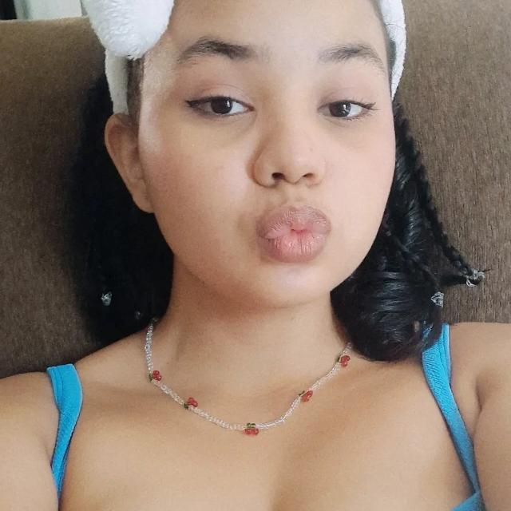
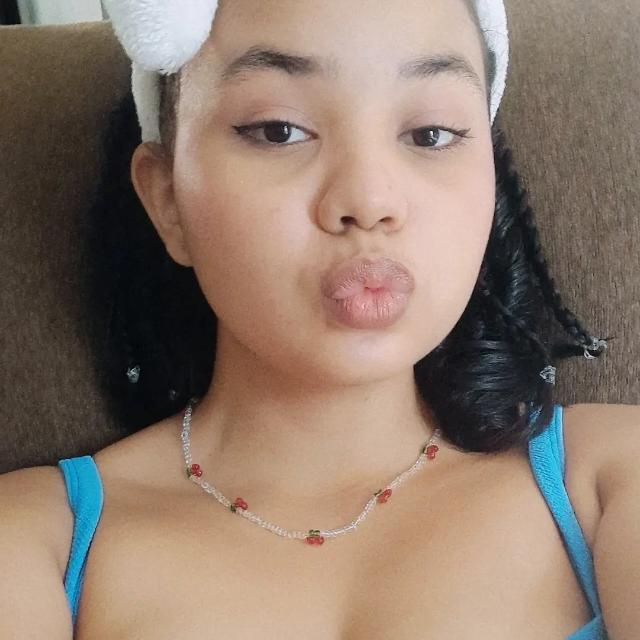

Porque Ben 10 é um ótimo personagem
Ben 10 é um dos personagens mais amados de todos os tempos. Afinal, ele tem o incrivel poder de se transformar em vários alienigenas com os mais diversos poderes, mesmo sendo só uma criança, e qual criança não iria querer isso? Sendo assim, ele gera um grau autissimo de identificação com elas, inclusive com o Guilherme. Além disso, ele se veste muito bem, e por mais que seja meio chato na maioria do tempo, é muito legal ver ele arrebentando os vilões, principalmente o Vilgax
Porque ele quase não teve festas de aniversário na vida dele
O namorado Guilherme, durante sua vida, teve poucas festas de aniversários, umas 3 ou 4 em quase 20 anos. Talvez por conta disso que ele não enxergue seu próprio aniversário de forma tão especial como poderia ser. Porém, em contrapartida, Cherry ama o dia do seu aniversário, e fazer uma surpresa para o Guilherme, pode fazer com que ele também comece a enxergar seu aniversário como um dia especial.
Porque Ben 10 é um de seus desenhos preferidos
Durante toda sua infância, Guilherme assistiu Ben 10 diversas vezes, além de jogar quase todos os seus jogos, e também ter ganhado vários brinquedo do mesmo. Sendo assim, ele tem uma grande memória afetiva com o personagem, o que faz com que muitas coisas relacionadas a ele, deixem o Guilherme feliz, e por que umas festa de aniversário com o tema "Ben 10" seria diferente?
Porque ela ama ele
Cherry ama o Guilherme, e geralmente quando a namorada ama o namorado, ela gosta de fazer surpresas pra ele. Ela mesmo teve essa incrivel ideia, e tem comentado sua vontade de fazer dar certo. Sendo assim, amar ele é um ótimo motivo de fazer essa festa temática.
Porque ela é uma ótima namorada
Cherry sempre foi, e sempre será a melhor namorada do mundo, e constantemente se esforça que pra que isso se mantenha assim. Ela sempre fala que ama ele, conversa com ele todo dia, beija ele, escuta ele falar de vez em quando, ajuda ele quando ele precisa, da presente pra ele, da cartinha pra ele, é a mulher mais linda e atraente do mundo, é super inteligente e esforçada, tem o sorriso mais lindo de todos os tempos e mundos, tem os olhinhos mais encantadores do mundo inteiro, e é uma pessoa de coração incrivel. Fazer festa de aniversário do Ben 10 também se enquadra na categoria de coisas que ótimas namoradas fazem
Porque ele é um ótimo namorado
Guilherme também ama muito sua namorada Cherry, e diariamente se esforça pra ser o melhor namorado do mundo pra ela. Ele sempre diz que ama ela, sempre fala que ela é a mulher mais linda do mundo, sempre está disposta a ajudar no que ela precisar, da presentes pra ela, e ama muito ela. Ás vezes ele faz, ou fala, umas besteiras, mas nunca é na intenção de machucar ela, ele só é meio bobinho, e as vezes o tdah bate, e ele não se atenta para o que está escrevendo. Mas mesmo quando essas coisas acontecem, ele continua amando muito ela, e tenta sempre aprender, e evitar fazer as coisas que deixam ela triste. Porque ele não gosta de fazer ela ficar triste, porque ele ama ela
Porque 20 anos é uma marca especial que só se comemora uma vez
20 anos são incriveis duas décadas, o que torna esse ano muito especial. Com ele começam a aumentar as responsabilidades, e também vem a crise dos 20 anos de idade, onde a pessoa já está saindo completamente da adolescência, e entrando de fato na vida adulta. Ter uma festa do Ben 10 pra comemorar essa data, deixaria as coisas mais leves e o Guilherme feliz. Porque mesmo virando adulto, é importante não perder o brilho e a sinceridade de quando somos crianças felizes
 
